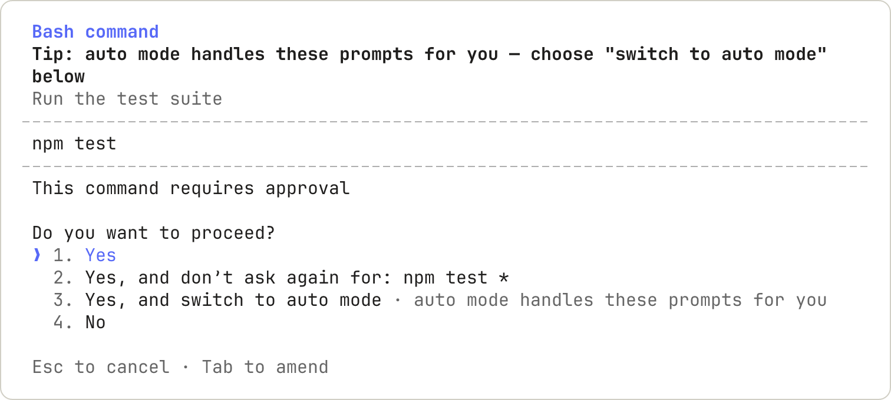

配置权限
通过细粒度权限规则、模式和托管策略来控制 Claude Code 可以访问和执行的操作。
Claude Code 支持细粒度权限，因此您可以精确指定代理允许执行的操作和不允许执行的操作。权限设置可以检入版本控制并分发给组织中的所有开发人员，也可以由个别开发人员自定义。
权限系统
Claude Code 使用分层权限系统来平衡功能和安全性。该表显示了对于每种工具类型，手动模式是否在操作运行前询问。其他权限模式改变了这些提示中的哪些会询问您；在自动模式中，分类器会审查操作而不是您，分类器如何评估操作列出了它看到的操作。
| 工具类型 | 示例 | 需要批准 | "是，不再询问"行为 |
|---|---|---|---|
| 只读 | 文件读取、Grep | 否，在工作目录和其他目录内 | 不适用 |
| Bash 命令 | Shell 执行 | 是，除了内置的只读命令集合 | 每个项目目录和命令永久有效 |
| 文件修改 | Edit/Write 文件 | 是 | 直到会话结束 |
| Web 获取 | WebFetch | 是，除了内置的预批准文档域集合 | 每个项目目录和域永久有效 |
| Web 搜索 | WebSearch | 是 | 每个项目目录永久有效 |
权限提示会显示 Claude 即将执行的操作，然后列出您的选项。以下示例是手动模式会话中 Bash 命令的提示：

第三个选项 是，并切换到自动模式，并非在每个提示中都会出现。
当您选择"是，不再询问"且批准永久保存时（例如对于 Bash 命令或 WebFetch 域），Claude Code 会将规则保存到 git 项目根目录的 .claude/settings.local.json，通过工作树解析到主检出。该规则适用于该项目中的未来会话，包括在子目录和工作树中启动的会话。文件修改批准不会保存到文件中：如表所示，它仅持续到会话结束。在某些情况下，例如在 git 项目外或在 Windows 上，Claude Code 不使用项目根目录；Claude Code 查找每个文件的位置列出了这些情况以及它保存规则的位置。
有时权限提示仅提供一次性批准，没有"不再询问"选项，也没有允许操作在会话的其余部分进行的选项。Claude Code 仅在提示可以向您显示它们允许的所有内容时才提供这些选项，因此您从提示保存的规则仅涵盖其选项命名的内容。当提示仅提供一次性批准时，批准该操作一次，或在 /permissions 中自己添加规则。要停止针对以 watch 等 exec 包装器开头的命令的提示，或针对带有 -delete 等操作的 find 命令的提示，请参阅 Exec 包装器和 find 操作。
在回答权限提示时添加注释
您可以在批准或拒绝单个操作时向 Claude 附加注释。在大多数权限提示上，包括 Bash、PowerShell、文件和 MCP 工具提示，移动到是或否并按 Tab 在该选项上打开注释字段。WebFetch 和浏览器提示不提供该字段。允许操作在会话的其余部分进行或保存规则的选项也不接受注释。
打开字段后，输入注释，然后按以下键之一：
Enter：提交您的答案并附加注释。如果您将字段留空，Claude Code 会提交答案而不附加注释。Tab：关闭字段而不回答。Claude Code 保留您输入的文本，如果您使用该选项回答，仍会发送它。Shift+Tab：在文件提示上，例如 Edit 或 Write 提示，关闭字段的方式与Tab相同。在 v2.1.235 之前，在字段内按Shift+Tab会选择允许操作在会话的其余部分进行的选项，因此 Claude Code 批准了会话其余部分的操作并丢弃了注释。
Claude Code 根据您的回答方式以不同的方式传递注释：
- 是：Claude Code 运行操作，然后在结果后将您的注释发送给 Claude。
- 否：Claude Code 将您的注释作为拒绝原因发送给 Claude，Claude 继续工作。如果您在来自主对话的提示上选择否而不附加注释，Claude Code 会停止该轮。
管理权限
您可以使用 /permissions 查看和管理 Claude Code 的工具权限。此对话框列出所有权限规则和它们来自的 settings.json 文件。您可以在 Claude 工作时打开此对话框：当您添加或删除规则时，Claude Code 会从 Claude 在同一轮中的下一个工具调用开始应用更改。在 v2.1.234 之前，Claude Code 会将命令排队直到轮次完成。
- Allow 规则让 Claude Code 使用指定的工具而无需手动批准。
- Ask 规则在 Claude Code 尝试使用指定工具时提示确认。
- Deny 规则防止 Claude Code 使用指定的工具。
规则按顺序评估：deny、ask，然后 allow。该顺序中的第一个匹配项决定结果，规则特异性不会改变顺序。
一个宽泛的 deny 规则（如 Bash(aws *)）会阻止每个匹配的调用，包括也匹配更具体的 allow 规则（如 Bash(aws s3 ls)）的调用，因此 deny 规则不能包含允许列表例外。ask 和 allow 之间也适用相同的优先级：匹配的 ask 规则即使更具体的 allow 规则也匹配同一调用，也会提示。
Deny 规则的行为取决于它们是命名工具还是在工具内范围化模式。像 Bash 这样的裸工具名称会将工具从 Claude 的上下文中完全移除，因此 Claude 永远看不到它。如果您在会话中途添加此类规则，Claude 无法从其下一个工具调用开始调用该工具；拒绝整个工具 涵盖了 Claude 已经看到的定义会发生什么。像 Bash(rm *) 这样的范围化规则会保留工具的可用性，并在 Claude 尝试时阻止匹配的调用。
裸名称移除适用于除了 EndConversation 之外的每个工具：当任何其他工具仍然存在时，deny 规则无法移除它，ask 规则永远不会为其提示。
权限规则由 Claude Code 强制执行，而不是由模型强制执行。您的提示或 CLAUDE.md 中的说明会影响 Claude 尝试执行的操作，但它们不会改变 Claude Code 允许的操作。要授予或撤销访问权限，请使用 /permissions、此处描述的规则、权限模式 或 PreToolUse hook。
当 auto mode 对您的会话可用时，此对话框还包括 auto mode 分类器规则。选择 Auto mode 选项卡以查看它们。
权限模式
Claude Code 支持多种权限模式来控制工具调用的批准方式。请参阅权限模式了解何时使用每种模式。要更改会话启动时的模式，请在您的设置文件中设置 defaultMode。会话启动时的模式涵盖了每个计划的内置默认值以及 VS Code 扩展读取的内容。
| 模式 | 描述 |
|---|---|
default |
在首次使用每个工具时提示权限。在 CLI、VS Code 和 JetBrains 扩展以及桌面应用中标记为 Manual，Claude Code 接受 manual 作为别名 |
acceptEdits |
自动接受工作目录或 additionalDirectories 中路径的文件编辑和常见文件系统命令，例如 mkdir、touch、mv 和 cp |
plan |
Claude 读取文件并运行只读 shell 命令来探索，但不编辑您的源文件；在自动模式可用的情况下，分类器批准的命令也会运行。在 CLI 和 VS Code 扩展中标记为 Plan |
auto |
无需常规提示即可运行；在 shell 命令和网络请求等操作运行之前，后台分类器会检查它们是否与您的请求一致 |
dontAsk |
自动拒绝每个会导致提示的调用，但您安装的 mod 仍可以批准其中的部分调用。您的工作目录中的文件读取和其他不需要批准的操作仍会运行，通过 /permissions 或 permissions.allow 规则预先批准的工具也会运行。AskUserQuestion、标记为 requiresUserInteraction 的 MCP 工具、从网络路径读取，以及在该设置到达 Claude Code 的会话中您的组织设置为 ask 的连接器工具，即使您已允许它们也会被拒绝 |
bypassPermissions |
跳过权限提示，除了任何模式都不会自动批准的操作 |
在 bypassPermissions 模式中，Claude Code 跳过权限提示，包括对受保护路径（例如 .git 和 .claude）的写入。跨会话消息传递保护措施仍然适用。仅在隔离环境（如容器或虚拟机）中使用此模式，其中 Claude Code 无法造成损害。
为了防止 bypassPermissions 或 auto 模式被使用，在任何设置文件中将 permissions.disableBypassPermissionsMode 或 permissions.disableAutoMode 设置为 "disable"。这些在托管设置中最有用，因为它们无法被覆盖。
权限规则语法
权限规则遵循格式 Tool 或 Tool(specifier)。括号内的说明符是字面意思，因此包含括号的命令或路径不需要转义。
匹配工具的所有使用
要匹配工具的所有使用，只需使用工具名称而不带括号：
| 规则 | 效果 |
|---|---|
Bash |
匹配所有 Bash 命令 |
WebFetch |
匹配所有网络获取请求 |
Read |
匹配所有文件读取 |
Bash(*) 等同于 Bash 并匹配所有 Bash 命令。作为拒绝规则，两种形式都会从 Claude 的上下文中移除该工具。
会话记录和权限对话框中为工具显示的标签可能与其规范名称不同。例如，会话记录中标记为 Stop Task 的工具具有规范名称 TaskStop。权限规则和 hook 匹配器 不匹配标签，因此写作 Stop Task 的规则不匹配。对于拒绝和询问规则，启动警告会指出这一点。请使用工具参考中列出的规范名称。
使用说明符进行细粒度控制
在括号中添加说明符以匹配特定的工具使用：
| 规则 | 效果 |
|---|---|
Bash(npm run build) |
匹配确切的命令 npm run build |
Read(./.env) |
匹配读取当前目录中的 .env 文件 |
WebFetch(domain:example.com) |
匹配对 example.com 的获取请求 |
按输入参数匹配
拒绝和询问规则可以使用 Tool(param:value) 匹配任何内置工具上的顶级输入参数。
要匹配 MCP 工具上的参数，请使用 --disallowedTools 传递拒绝规则。当 Claude Code 加载设置文件时，它会跳过任何具有括号的 mcp__ 规则。Claude Code 在交互式会话启动时在无效设置对话框中列出跳过的规则，以及在 claude doctor 输出中列出。
当 Claude 使用该参数设置为该确切值调用工具时，参数规则匹配。一个参数值的允许规则不会确立该调用总体上是安全的，因此允许规则继续使用每个工具自己的说明符语法。这适用于工具接受的任何标量参数：
| 规则 | 匹配 |
|---|---|
Agent(model:opus) |
请求 Opus 模型层级的 Agent 调用 |
Agent(isolation:worktree) |
请求 git worktree 的 Agent 调用 |
Bash(run_in_background:true) |
在后台运行的 Bash 调用 |
参数匹配遵循以下规则：
- 参数名称必须是工具输入的直接字段，例如 Agent 工具上的
model。嵌套在对象或数组内的字段不可匹配 - 每个规则命名一个参数。要对
model和isolation进行门控，请编写两个规则Agent(model:opus)和Agent(isolation:worktree)，而不是在一个规则中组合它们 - 该值支持
*作为通配符，匹配任何字符序列，因此Agent(isolation:*)匹配任何显式隔离值。没有*时匹配是精确的 - 模型省略的参数永远不会被匹配，因此
Agent(model:*)不匹配留下model未设置的调用 - 该值与 Claude 发送的文字输入进行比较，在任何规范化之前。
Agent(model:opus)匹配别名opus但不匹配完整模型 ID - 一个
Skill(skill:<name>)拒绝规则改为在其任何名称下匹配技能，例如其别名或显示名称 - 使用
--verbose运行以查看每个工具调用中的确切参数名称和值 - 冒号周围的空格被忽略
您不能以这种方式匹配工具的主要内容字段：Bash 和 PowerShell 的 command、Read、Edit 和 Write 的 file_path、Grep 和 Glob 的 path、NotebookEdit 的 notebook_path 和 WebFetch 的 url。像 Bash(command:rm *) 这样的规则可以通过复合命令绕过，因此 Claude Code 会忽略它并在启动时发出警告。改用 Bash(rm *)、Read(./path) 或 WebFetch(domain:host)。
通配符模式
Bash 规则中的 * 匹配任何文本，包括空格，因此一个规则涵盖一系列命令。没有 * 的规则匹配一个确切的命令。
将 * 放在子命令之后。在 git log --oneline main 中，git 是程序，log 是子命令，是确定程序执行什么操作的词。Claude Code 按照编写的方式匹配第一个 * 之前的所有内容，因此这些词是限制规则的内容：Bash(git log *) 仅允许 git log 命令，Bash(git *) 允许每个 git 命令。Claude Code 在启动时警告关于在子命令之前有 * 的允许规则，例如 Bash(git * main)。
编写您希望 Claude 运行而不询问的命令，并用 * 替换变化的部分。使用此配置，Claude Code 运行 npm 脚本和 git 提交而不询问，并拒绝以 git push 开头的命令。以另一种方式编写的推送，例如 git -C . push，不匹配；请参阅Bash 规则不匹配的内容。
{
"permissions": {
"allow": [
"Bash(npm run *)",
"Bash(git commit *)"
],
"deny": [
"Bash(git push *)"
]
}
}
* 可以出现在规则中的任何位置：开始、中间或结尾。每行显示一个规则、它匹配的命令以及附近它不匹配的命令：
| 您编写 | 匹配 | 不匹配 |
|---|---|---|
Bash(npm run build) |
npm run build |
npm run build --watch |
Bash(npm run *) |
npm run build、npm run test --watch、npm run |
npm install |
Bash(git log * main) |
git log --oneline main、git log -5 main、git log --output=<file> main |
git log main、git push origin main |
Bash(git * main) |
git merge main、git push origin main、git -c core.fsmonitor=<script> diff main |
git log |
Bash(* --version) |
node --version、bash -c 'echo hi' --version |
node -v |
Bash(ls *) |
ls -la、ls |
lsof |
Bash(ls*) |
ls -la、lsof |
|
Bash(* --help *) |
npm --help x |
npm --help |
三个匹配规则产生这些行：
*代表其位置上的任何文本。 在Bash(git * main)中，它代表子命令，因此 Claude Code 匹配每个 git 子命令和它之前的每个选项。这包括-c，它使 git 运行您命名的程序。在Bash(* --version)中，*代表程序，因此任何程序都匹配。- 末尾的
*，前面有空格，也匹配裸命令。Bash(ls *)匹配ls，Bash(git log *)匹配git log。这仅在尾部*是规则的唯一通配符时成立：Bash(* --help *)匹配npm --help x但不匹配npm --help。 - 尾部
*前的空格是规则的一部分。Bash(ls *)在ls后需要一个空格，因此lsof不匹配。Bash(ls*)没有空格，因此它也匹配lsof。
:* 后缀是编写尾部通配符的等效方式，因此 Bash(ls:*) 匹配与 Bash(ls *) 相同的命令。
当您为命令前缀选择"是，不再询问"时，权限对话框会写入空格分隔的形式。:* 形式仅在模式末尾被识别。在像 Bash(git:* push) 这样的模式中，冒号被视为文字字符，不会匹配 git 命令。
工具名称通配符
拒绝和询问规则也接受工具名称位置中的 glob 模式。该模式必须匹配完整的工具名称："*" 匹配每个工具，"mcp__*" 匹配所有服务器中的每个 MCP 工具。由裸名称 glob 拒绝规则匹配的工具会从 Claude 的上下文中移除，与裸工具名称相同，包括 EndConversation 例外：glob 拒绝在任何其他工具保留时无法移除它，glob 询问永远不会提示它。此配置拒绝每个 MCP 工具：
{
"permissions": {
"deny": [
"mcp__*"
]
}
}
允许规则仅在文字 mcp__<server>__ 前缀之后接受工具名称 glob。服务器段必须不含 glob，以便规则命名您配置的特定服务器。mcp__puppeteer__* 匹配来自 puppeteer 服务器的每个工具，mcp__github__get_* 匹配其 get_ 工具。未锚定的允许 glob（如 "*"、"B*" 或 "mcp__*"）会被跳过，不会自动批准任何内容。
工具名称不匹配任何已知工具的拒绝或询问规则会产生启动警告以捕获拼写错误。包含 _ 或 * 的工具名称不受此检查的约束，Claude Code 已移除的工具的名称（例如 TaskOutput）也不受约束。
工具特定的权限规则
Bash
Bash 规则匹配整个命令文本，其中 * 代表任何文本。通配符模式显示每个规则形状匹配的命令以及在哪里放置 *。本节的其余部分涵盖 Claude Code 如何匹配复合命令和包装器、哪些包装器和 find 操作无法通过前缀规则批准、规则不匹配的内容、只读命令和重定向。
复合命令
Claude Code 知道 shell 运算符，所以像 Bash(safe-cmd *) 这样的规则不会给它权限运行命令 safe-cmd && other-cmd。识别的命令分隔符是 &&、||、;、|、|&、& 和换行符。每个子命令都必须被允许，复合命令才能无需提示即可运行，例如因为该子命令匹配 allow 规则或是只读命令。
Deny 和 ask 规则在任何子命令匹配它们时适用，包括嵌套在子 shell 中的命令、命令替换或控制流体（如 for 循环）中的命令。像 Bash(git clean *) 这样的 ask 规则仍然会提示您 cd /tmp && git clean -f 或 echo "$(git clean -f)"，即使在自动模式中。
当 && 或 || 后面没有任何内容时，例如在 npm test && 中，Claude Code 将命令视为无法解析，不会将其分割为子命令以进行 allow 规则匹配，因此像 Bash(npm *) 这样的规则不会批准它。
当您使用"是，不再询问"批准复合命令时，Claude Code 会为需要批准的每个子命令保存一个单独的规则，而不是为完整的复合字符串保存单个规则。例如，批准 git status && npm test 会为 npm test 保存一个规则，因此将来的 npm test 调用被识别，无论 && 前面是什么。诸如 cd 进入工作目录之外的目录之类的子命令会为该路径生成自己的 Read 规则。单个复合命令最多可能保存 5 个规则。
包装器
在匹配 Bash 规则之前，Claude Code 会剥离一组固定的包装器，因此像 Bash(npm test *) 这样的规则也匹配 timeout 30 npm test。被剥离的包装器是 timeout、time、nice、nohup 和 stdbuf，加上 shell 内置命令 command 和 builtin，以及 zsh 的 noglob。每个都将其参数作为实际命令运行。两个相关的形式不被剥离：查询形式 command -v，它查找命令而不是运行命令，以及 zsh 的 nocorrect。
Claude Code 也会剥离某些已知安全的环境变量的前导赋值，因此 Bash(npm test *) 匹配 NODE_ENV=test npm test。Allow 规则不会匹配超过任何其他变量的赋值。Deny 或 ask 规则匹配超过任何前导赋值，因此 deny 中的 Bash(rm *) 仍然匹配 FOO=bar rm -rf tmp/。
裸 xargs 也被剥离，所以 Bash(grep *) 匹配 xargs grep pattern。剥离仅在 xargs 没有标志时适用：像 xargs -n1 grep pattern 这样的调用被匹配为 xargs 命令，因此为内部命令编写的规则不涵盖它。
此包装器列表是内置的，不可配置。开发环境运行器，如 direnv exec、devbox run、mise exec、npx 和 docker exec 不在列表中。因为这些工具将其参数作为命令执行，像 Bash(devbox run *) 这样的规则匹配 run 之后的任何内容，包括 devbox run rm -rf .。要批准环境运行器内的工作，请编写一个包含运行器和内部命令的特定规则，如 Bash(devbox run npm test)。为您想要允许的每个内部命令添加一个规则。
Exec 包装器和 find 操作
像 Bash(watch *) 或 Bash(find *) 这样的前缀规则无法自动批准以下命令，因此在 Manual 模式下它们会提示：
- Exec 包装器：如
watch、setsid、ionice和flock find：带有运行命令、删除文件或写入文件的操作（如-exec、-delete、-rm或-fprint），或带有-files0-from（从文件中获取要搜索的路径）
要批准不含 * 的特定调用，请为完整命令字符串编写精确匹配规则，如 Bash(find build -type f -delete)。
当命令包含 * 时，如 find . -name '*.tmp' -delete，Claude Code 会将规则读作通配符模式而不是精确匹配，因此该命令仍然会提示。请在每次提示时批准它，或使用为其返回 "allow" 的 PreToolUse hook。
Bash 规则不匹配的内容
Bash 规则匹配 Claude 编写的命令文本，在 Claude Code 分割复合命令和剥离包装器之后。它不匹配以不同形式调用的同一程序，因此 deny 或 ask 规则涵盖 Claude 通常产生的调用，而不是围绕程序的安全边界。deny 或 ask 中的这些规则停止第一种形式，而不是其他形式：
| 规则 | 停止 | 不停止 |
|---|---|---|
Bash(curl *) |
curl https://example.com |
/usr/bin/curl https://example.com、sh -c 'curl https://example.com' |
Bash(rm *) |
rm -rf build/ |
/bin/rm -rf build/、bash -c 'rm -rf build/' |
Bash(git push *) |
git push origin main |
git -C . push origin main、git -c push.default=current push origin main、git 'push' origin main |
您的其他规则和权限模式决定最后一列中的命令。
对于不依赖于命令文本的文件系统和网络强制执行，使用沙箱。要在运行前使用您自己的逻辑检查完整的命令文本，使用PreToolUse hook。
只读命令
Claude Code 将一组内置 Bash 命令识别为只读，并在每种模式下无需权限提示即可运行它们，但 permissions.blockReadsOutsideWorkingDirectories 会改变工作目录之外路径的行为。该集合包括 ls、cat、echo、pwd、head、tail、grep、find、wc、which、diff、stat、du、cd 和 git 的只读形式。该集合不可配置；要对其中一个命令要求提示，请为其添加 ask 或 deny 规则。在自动模式下，这些命令也可以等待分类器的审查；请参阅分类器如何评估操作。
像 ls > out.txt 这样的重定向会在目标上添加检查。请参阅重定向。
对于其每个标志都是只读的命令，允许未引用的 glob 模式，因此 ls *.ts 和 wc -l src/*.py 无需提示即可运行。
在 Manual 模式下，来自此集合的命令在这些情况下仍然提示：
- 具有写入能力标志的命令的未引用 glob：具有写入能力或执行能力标志的命令，如
find、sort、sed和git，在存在未引用的 glob 时提示，因为 glob 可能扩展为像-delete这样的标志。 docker指向另一个守护程序：当命令携带选择不同守护程序的标志时，docker的只读形式提示，如-H、--context或 Podman 的--url和--connection。file带有路径打开标志：当file传递-m/--magic-file或-f/--files-from时，file提示，因为这些标志使file打开标志值中命名的路径。- 可能打印环境变量的
ps：当ps的某个参数可能充当e选项时（如ps auxe或ps aux -e），ps会提示，因为该选项会打印进程环境变量。ps aux和ps -ef无需提示即可运行。对ps aux -e等带短横线形式的检查需要 Claude Code v2.1.290 或更高版本。 - Windows 上的网络路径：其参数包括网络 (UNC) 路径的命令，如
\\server\share\file，提示是因为访问网络路径可能会将您的 Windows 凭据发送到它命名的主机。同样的检查适用于PowerShell 工具命令。 - 写入特殊 shell 变量：设置、取消设置或遍历某些特殊 shell 变量（如
PATH或IFS）的命令会提示，即使命令的其余部分是只读的。 - 分析无法解析的命令：当 Claude Code 无法完全解析命令时，它会要求批准而不是将命令视为只读。超过 10,000 个字符的命令总是提示，因为它们超过了分析解析的内容。
进入工作目录内或其他目录内的路径的 cd 也是只读的，像 cd packages/api && ls 这样的复合命令在每个部分都符合条件时无需提示即可运行。即使每个部分都是只读的，这些组合也会提示：
cd与git：当cd改变到不同目录时提示，因为在新目录中运行git可以执行该目录的钩子。cd的目标解析到当前工作目录是无操作的，不会触发提示。cd与重定向：当 Claude Code 无法确定在cd运行后重定向目标解析到哪个目录时提示。仅重定向目标为/dev/null的命令，如cd app; grep -r pattern . 2>/dev/null，不提示，因为/dev/null不依赖于工作目录。
尝试约束命令参数的 Bash 权限模式很脆弱。例如，Bash(curl http://github.com/ *) 旨在将 curl 限制为 GitHub URL，但不会匹配以下变体：
- URL 前的选项：
curl -X GET http://github.com/... - 不同的协议：
curl https://github.com/... - 重定向：
curl -L http://short.example.com/xyz，重定向到 GitHub - 变量：
URL=http://github.com && curl $URL
为了更可靠的 URL 过滤，请考虑：
- 限制 Bash 网络工具：使用 deny 规则阻止
curl、wget和类似命令，然后对允许的域使用带有WebFetch(domain:github.com)权限的 WebFetch 工具。Deny 规则不匹配按路径调用的同一程序或在sh -c内部调用的程序，因此当限制必须成立时，将其与沙箱网络允许列表配对；请参阅Bash 规则不匹配的内容 - 使用 PreToolUse hook：实现一个 hook 来验证 Bash 命令中的 URL 并阻止不允许的域
- 添加 CLAUDE.md 指导：在
CLAUDE.md中描述您允许的 curl 模式。这会影响 Claude 尝试的内容，但不会强制执行边界，因此请将其与上述选项之一配对
请注意，仅使用 WebFetch 不会阻止网络访问。如果允许 Bash，Claude 仍然可以使用 curl、wget 或其他工具来访问任何 URL。
重定向
当命令重定向输出或输入时，Claude Code 会根据您的文件规则检查重定向目标，就像 Claude 直接写入或读取该文件一样：
- 输出重定向：对于
> file、>> file或2> file，检查涵盖您的Editallow 和 deny 规则、受保护的路径和工作目录。像Bash(git commit *)这样的规则允许命令，而不是目标。以~开头或包含 glob 字符的目标需要您的批准。 - 输入重定向：对于
< file，检查涵盖您的Readallow 和 deny 规则和工作目录。工作目录外的目标需要您的批准，除非 allow 规则涵盖它。包含 glob 模式的目标，或在同一命令中跟随cd的相对路径，即使 allow 规则涵盖它也需要您的批准。Claude Code 在 v2.1.257 及更高版本中检查输入目标。
没有文件在其后的目标不被检查：/dev/null、文件描述符形式如 2>&1 和 <&3，以及 here-docs 和 here-strings。
Claude Code 也检查 tee 命令写入的文件，包括在管道中，如 make | tee build.log。检查涵盖您的 Edit allow 和 deny 规则、受保护的路径和工作目录。像 Bash(tee *) 这样的 allow 规则不涵盖工作目录外的目标。Claude Code 在 v2.1.269 及更高版本中检查 tee 目标。
PowerShell
PowerShell 权限规则使用与 Bash 规则相同的形式，裸 PowerShell 或 PowerShell(*) 匹配每个命令。此配置允许 Get-ChildItem 和 git commit 命令，同时阻止 Remove-Item：
{
"permissions": {
"allow": [
"PowerShell(Get-ChildItem *)",
"PowerShell(git commit *)"
],
"deny": [
"PowerShell(Remove-Item *)"
]
}
}
常见别名在匹配之前会被规范化。为 cmdlet 名称编写的规则也会匹配这些别名，因此 PowerShell(Get-ChildItem *) 也会匹配 gci、ls 和 dir。匹配不区分大小写。
Claude Code 解析 PowerShell AST 并独立检查复合命令中的每个命令。管道运算符 |、语句分隔符 ; 和 PowerShell 7+ 上的链运算符 && 和 || 将复合命令分割为子命令。每个子命令都必须被允许，复合命令才能无需提示即可运行，例如通过匹配 allow 规则。
Read 和 Edit
要阻止 Claude 的文件工具读取文件或目录，请为其路径添加 Read deny 规则，如 Read(./.env) 或 Read(./secrets/**)；排除敏感文件有一个粘贴就用的示例。如果您的项目有 .claudeignore 文件，它不会产生任何效果，因此请将其条目移到 Read deny 规则中。
Read 和 Edit 规则涵盖的范围
Edit 规则适用于所有编辑文件的内置工具。Claude 尽力将 Read 规则应用于所有读取文件的内置工具，如 Grep 和 Glob，以及您提示词中的 @file 提及，以及连接的 IDE 与 Claude 共享的选择和打开文件上下文。
Read(path) deny 规则也适用于您粘贴到提示词中的图片路径以及您 @ 提及的目录：
- 图片路径：当您在终端中将图片路径粘贴到提示词中或将图片文件拖入提示词，且规则匹配该路径时，Claude Code 不会附加该图片。如果粘贴的内容中没有其他图片，该路径将作为文本保留在您的提示词中。
- 目录：Claude 收到的列表会省略规则匹配的文件和目录名称。
Claude Code 在 v2.1.290 及更高版本中检查粘贴的图片路径和目录列表。
Read deny 规则也会阻止同一路径上的 Edit 和 Write 工具，包括在那里创建新文件。NotebookEdit 不被覆盖，因此为任何工具都不能更改的路径添加 Edit deny 规则。对于 Write 工具，该检查需要 Claude Code v2.1.228 或更高版本。
Write(path)、NotebookEdit(path) 和 Glob(path) 规则从不匹配
Claude Code 仅根据 Edit(path) 和 Read(path) 规则检查文件权限。如果您为 Write、NotebookEdit、Glob 或旧版 MultiEdit 编写路径规则，Claude Code 会接受该规则，但从不将任何读取或编辑与其匹配。
使用 Edit(docs/**) 代替 Write(docs/**)、NotebookEdit(docs/**) 或 MultiEdit(docs/**)，以及 Read(docs/**) 代替 Glob(docs/**)。要匹配 Write、NotebookEdit 或 Glob 工具的每次使用（无论路径如何），请只编写工具名称。
路径模式如何匹配
Read 和 Edit 规则都使用gitignore模式语法，具有四种不同的模式类型：
| 模式 | 含义 | 示例 | 匹配 |
|---|---|---|---|
//path |
来自文件系统根目录的绝对路径 | Read(//Users/alice/secrets/**) |
/Users/alice/secrets/** |
~/path |
来自主目录的路径 | Read(~/Documents/*.pdf) |
/Users/alice/Documents/*.pdf |
/path |
相对于设置源的路径 | Edit(/src/**/*.ts) |
项目设置中的 <primary working directory>/src/**/*.ts |
path 或 ./path |
相对于当前目录的路径 | Read(*.env) |
<cwd>/*.env |
像 /Users/alice/file 这样的模式不是绝对路径。单个前导斜杠锚定在设置源，而不是文件系统根目录。对于绝对路径，使用 //Users/alice/file。
模式的锚定位置
/path 模式锚定在与定义它的设置源关联的目录，因此相同的规则根据您放置它的位置匹配不同的位置：
| 规则定义在 | /path 解析为 |
|---|---|
.claude/settings.json 处的项目设置 |
<primary working directory>/path |
.claude/settings.local.json 处的本地设置 |
<primary working directory>/path |
~/.claude/settings.json 处的用户设置 |
~/.claude/path |
使用 --settings <file> 传递的文件 |
<directory of file>/path |
| CLI 标志或会话规则 | <primary working directory>/path |
您通过 /permissions 添加的规则遵循您保存它的设置文件的行。
本地设置规则锚定在会话的主工作目录，而不是 Claude Code 存储文件的仓库根目录。在从仓库根目录启动的会话中，两个目录相同；在worktree会话中，像 Edit(/src/**) 这样的共享规则匹配该 worktree 自己的 src/ 目录。
像 Read(/secrets/**) 这样的 deny 规则在用户设置中阻止 ~/.claude/secrets/**，而不是您项目中的 secrets 目录。要在用户设置中编写适用于每个项目内部的规则，请改用 // 绝对路径或 ~/ 主目录相对路径。
在 Windows 上，路径在匹配前被规范化为 POSIX 形式。C:\Users\alice 变成 /c/Users/alice，因此使用 //c/**/.env 来匹配该驱动器上的 .env 文件。要在所有驱动器上匹配，使用 //**/.env。
示例：
Edit(/docs/**)：编辑<primary working directory>/docs/中的文件，而不是/docs/或<primary working directory>/.claude/docs/Read(~/.zshrc)：读取您主目录的.zshrcEdit(//tmp/scratch.txt)：编辑绝对路径/tmp/scratch.txtRead(src/**)：作为 allow 规则，仅从<current-directory>/src/读取；作为 deny 或 ask 规则，匹配当前目录下任何深度的src目录
模式的匹配深度
一个规则只匹配其锚点下的文件；在该范围内，匹配深度取决于模式形状，以及对于单段目录模式，规则类型，下面描述。裸文件名遵循 gitignore 语义并在任何深度匹配，因此 Read(.env) 和 Read(**/.env) 是等价的：
| Deny 规则 | 阻止 | 不阻止 |
|---|---|---|
Read(.env) 或 Read(**/.env) |
当前目录或其下的任何 .env |
父目录或另一个项目中的 .env |
Read(//**/.env) |
文件系统上任何地方的任何 .env |
无；规则锚定在文件系统根目录 |
具有单个目录段的相对模式，如 src/**，根据规则类型在不同深度匹配：
- Allow 规则：
Edit(src/**)仅匹配<cwd>/src及其下的文件。要允许任何深度的目录名，请编写Edit(**/src/**)。 - Deny 和 ask 规则：
Read(secrets/**)匹配当前目录下任何深度的名为secrets的目录，因此规则也适用于嵌套副本。
每个其他模式形状在每种规则类型中的相同深度匹配：Edit(/src/**) 和 Edit(src/components/**) 仅在其锚定位置匹配，而 Edit(**/src/**) 在任何深度匹配。
以下示例显示了具有顶级 src/ 目录和 vendor/ 下嵌套副本的项目中的每个模式形状：
<current-directory>/
├── src/
│ └── app.ts
└── vendor/
└── pkg/
└── src/
└── lib.js
| 规则 | 匹配 src/app.ts |
匹配 vendor/pkg/src/lib.js |
|---|---|---|
Edit(src/**) 作为 allow 规则 |
是 | 否 |
Edit(src/**) 作为 deny 或 ask 规则 |
是 | 是 |
Edit(/src/**) 在任何规则类型中 |
是 | 否 |
Edit(**/src/**) 在任何规则类型中 |
是 | 是 |
在 gitignore 模式中，* 匹配单个路径段内的文本，可以出现在模式中的任何位置，而 ** 匹配跨目录。
特殊字符和 ! 否定
当您使用"是，不再询问"批准文件路径时，Claude Code 会转义该路径中的 gitignore 模式字符，如 [、] 和 *，因此生成的规则仅匹配您批准的字面路径。您自己编写的规则不会被转义。
您不需要转义路径中的括号，因此 Edit(./Finance (2024)/**) 匹配按拼写的 Finance (2024) 文件夹。
其路径不可用作 gitignore 模式的 deny 或 ask 规则仍然保护该确切路径。其模式不可用的 allow 规则不批准任何内容。
一个 deny 或 ask 模式，其路径以 ! 开头是 gitignore 否定。它从其前面列出的 path 或 ./path 规则中切割出它匹配的路径。在一个设置文件的 deny 列表中，Read(*.env) 后跟 Read(!sample.env) 阻止名称以 .env 结尾的每个文件在任何深度，除了名为 sample.env 的文件。首先列出的 ! 规则切割不出任何内容。
切割范围仅到达来自同一源的规则。项目设置或 --disallowedTools 中的 Read(!.env) 不会取消来自托管设置或任何其他设置文件的 Read(./.env) deny。
两个限制缩小了 ! 模式可以切割的内容：
- Claude Code 读取
!模式相对于当前目录，即使/、~/或//跟随!，因此模式无法到达用其中一个前缀锚定的规则。Read(!~/notes/public/**)从Read(~/notes/**)中切割不出任何内容。 - 切割不能重新打开规则作为整体阻止的目录内的文件。使用
Read(secrets/**)和Read(!secrets/public/**)，Claude Code 仍然阻止secrets/public以及secrets的其余部分。
符号链接
当 Claude 请求的文件路径通过符号链接时，权限检查涵盖两个路径：Claude 请求的路径和它解析到的文件。这适用于 macOS、Linux 和 Windows 上的符号链接，以及 Windows 上的目录连接。
规则如何匹配符号链接路径
Allow 和 deny 规则对请求的路径和它解析到的文件的处理方式不同：
- Allow 规则：仅在请求的路径和它解析到的文件都匹配时适用。通过允许目录内指向其外部的符号链接进行的读取不匹配该规则。
- Deny 规则：当请求的路径或它解析到的文件匹配时适用。指向被拒绝文件的符号链接本身被拒绝。例如，使用
Read(./project/**)允许和Read(~/.ssh/**)拒绝，./project/key处的符号链接指向~/.ssh/id_rsa被阻止：目标未通过 allow 规则，并匹配 deny 规则。
在 macOS 和 Linux 上，通过带有 //、~/ 或 / 模式的符号链接目录编写的 deny 或 ask 规则也适用于该目录的真实位置。例如，在 macOS 上，其中 /etc 解析为 /private/etc，Read(//etc/**) 也阻止 /private/etc/hosts。在 v2.1.268 之前，通过符号链接目录编写的 deny 或 ask 规则不适用于其真实位置给出的路径。
Grep 和 Glob 搜索 path 参数解析到的目录。Claude Code 将 Read deny 规则应用于该目录。
通过符号链接的附件
Read deny 规则也涵盖以下附件，对每个附件按其指定的路径或它解析到的文件进行匹配。当规则匹配某个附件时，Claude Code 会将其排除在对话之外：
@提及：您在提示词中提及的文件或目录。被拒绝的文件不会在对话中留下任何内容，而目录的列表会省略规则涵盖的名称。- 粘贴的图片：您在终端中将其路径粘贴或拖入提示词的图片
- 已更改的文件：Claude Code 在文件于磁盘上更改后重新读取的文件
- IDE 上下文：连接的 IDE 共享的选择和打开文件上下文
启用 permissions.blockReadsOutsideWorkingDirectories 时，或在 --restricted 会话中，如果这些附件来自该设置或标志拒绝 Claude 文件读取的路径，它们也会被排除。
如果您 @ 提及的文件被以下这行取代，则表示 Claude Code 无法确定该路径指向何处，例如因为其符号链接形成循环：
Referenced <path> (not read: could not be examined)
Claude 会被告知改用其文件工具读取该路径；当 Claude Code 只是没有足够时间检查该路径时，这种读取可能会成功。
当路径的符号链接无法解析时，该读取也会被拒绝，因此请修复磁盘上的链接，或通过可以解析的路径 @ 提及该文件。
通过符号链接的写入
如果 Claude 要求编辑或写入的路径本身是符号链接，Edit 和 Write 工具拒绝写入并指导 Claude 到链接的目标。
当目录在文件路径上是符号链接，或当 Bash 或 PowerShell 命令进行写入时，写入仍然可以通过符号链接进行。对于这些写入，发生的情况取决于写入解析到的文件相对于您的工作目录和受保护的路径的位置：
- 解析到工作目录外：当请求的路径在您的工作目录内，而它解析到的文件不在时，在
acceptEdits模式中写入不会自动批准。在自动模式中，除非 allow 规则批准写入，否则您会被提示而不是分类器决定。提示命名写入解析到的路径。 - 解析到请求的路径不命名的受保护路径：受保护的路径表给出每个权限模式的结果，除了表将写入路由到分类器的地方，此写入改为提示您。
无法解析或改变的路径
当 Claude Code 无法确定路径在磁盘上的位置时，例如因为路径上的符号链接形成循环，Read、Edit 和 Write 工具拒绝操作。
当工具随后打开已批准的文件时，它确认路径仍然解析到权限检查批准的位置。
网络路径
当 Claude 的文件读取工具（如 Read、Grep 和 Glob）从网络路径读取时，该读取会经过单独的权限检查。网络路径是可以访问另一台计算机的路径：在 Windows 上是 UNC 路径，如 \\server\share\file；在 macOS 和 Linux 上是 /net 自动挂载路径，如 /net/fileserver/notes.txt。查找此类路径可能会联系它命名的主机，而在 Windows 上，这种联系可能会将您的凭据发送给该主机。Shell 命令有自己的检查：在 Manual 模式下，参数中包含 UNC 路径的只读 Bash 或 PowerShell 命令在 Windows 上仍然会提示。
在 Claude Code v2.1.292 及更高版本中，以下各项都不会取消该提示：
- Allow 规则：规则不会预先批准该读取，包括针对整个工具的规则，如
Read - PreToolUse hook：返回
"allow"的 hook 不会跳过该提示 - 自动模式：提示会交给您，而不是由分类器决定该读取
在 dontAsk 模式下，Claude Code 会拒绝该读取而不是提示。在 bypassPermissions 模式下，以及在可使用绕过权限的交互式终端会话中处于计划模式时，该读取无需此提示即可运行。
要在没有此提示的情况下读取网络共享上的文件，请先为该共享提供一个本地路径：
- Windows：将共享映射到驱动器号，并在启动 Claude Code 时使用
--add-dir传递该驱动器，如工作目录中所述。对于映射到Z:的共享，请在 PowerShell 中运行claude --add-dir Z:\。 - macOS 和 Linux：将共享挂载到本地路径（如
/mnt或/Volumes下的目录），并从那里读取文件，如工作目录是网络路径中所述
WebFetch
WebFetch 规则使用 domain: 前缀并针对请求的 URL 的主机名进行匹配。匹配不区分大小写，支持 * 通配符，并从规则和主机名中剥离尾部 .，因此 example.com. 和 example.com 被视为相同。
WebFetch(domain:example.com)仅匹配对example.com的请求。要同时涵盖api.example.com等子域，请添加WebFetch(domain:*.example.com)规则WebFetch(domain:*.example.com)匹配任何深度的任何子域，如api.example.com或a.b.example.com，但不匹配example.com本身WebFetch(domain:*)匹配每个域。它与裸WebFetch规则不同；请参阅允许或拒绝每次获取
在前导 *. 或裸 * 以外的任何位置，通配符仅匹配两个点之间的文本。WebFetch(domain:example.*) 匹配 example.org，其中 * 变成 org，但不匹配 example.evil.com，其中 * 必须变成 evil.com 并跨越一个点。这防止尾部通配符匹配攻击者可以注册的域。
WebFetch 规则中的通配符需要 Claude Code v2.1.172 或更高版本来匹配获取。
允许或拒绝每次获取
裸 WebFetch 规则是没有 domain: 部分的工具名称，如 "deny": ["WebFetch"]。它和 WebFetch(domain:*) 都涵盖每个 URL，但 Claude Code 以不同方式应用它们，只有 domain: 形式也将其域添加到沙箱的允许或拒绝的域列表。该部分列出沙箱支持的通配符形式和添加裸 * 的版本。
每行显示规则在 allow 列表中和 deny 列表中的作用：
| 规则 | 在 allow 中 |
在 deny 中 |
|---|---|---|
WebFetch |
Claude 无需提示您即可获取。不改变沙箱命令可以到达的主机。 | Claude Code 移除 WebFetch 工具，因此 Claude 根本无法获取。不改变沙箱命令可以到达的主机。 |
WebFetch(domain:*) |
Claude 无需提示您即可获取，沙箱命令可以到达任何主机。 | Claude Code 保留工具并拒绝每次获取，沙箱命令无法到达任何主机。 |
两种形式也在 Artifact 的读取上有所不同，即 Artifact 工具在 claude.ai 上发布的页面。裸 WebFetch deny 或 ask 规则不适用于这些读取。覆盖 claude.ai 或 *.claudeusercontent.com 内容主机的 domain: 规则，如 WebFetch(domain:claude.ai) 或 WebFetch(domain:*)，拒绝每次读取或在读取前提示。Artifact 规则也是如此。
当规则阻止读取时，拒绝命名规则。在 v2.1.268 之前，裸 WebFetch deny 规则阻止每次 Artifact 读取，裸 ask 规则在每次读取前提示。
要让 Claude 自由获取同时保持沙箱允许列表不变，请使用裸形式。此 settings.json 这样做：
{
"permissions": {
"allow": ["WebFetch"]
}
}
当您要求 Claude 获取页面时，它无需提示即可获取。当您要求它对沙箱允许列表外的主机运行沙箱 curl 时，Claude Code 仍然会提示您该主机，因为裸规则没有将主机添加到允许列表。
在自动模式中，Claude 改为在命令的每个命令允许的域中命名主机以供分类器审查。
MCP
要匹配某个 MCP 服务器的所有工具，请编写 mcp__<server>__*。要匹配单个工具，请编写其完整名称 mcp__<server>__<tool>。
mcp__puppeteer匹配由puppeteer服务器提供的任何工具mcp__puppeteer__*使用通配符语法，也匹配来自puppeteer服务器的所有工具mcp__puppeteer__puppeteer_navigate匹配由puppeteer服务器提供的puppeteer_navigate工具
对于 <server>，请按照服务器名称在该服务器工具名称中出现的形式编写。以下示例展示了对于包含特殊字符的名称、来自插件的服务器，以及包含 __ 或以 _ 结尾的名称应编写的规则：
- 包含
.或空格等字符的名称：这些字符会变为_，因此对于您配置为my.server的服务器，请编写mcp__my_server__* - 由插件提供的服务器：
<server>采用插件作用域形式，因此对于名为my-plugin的插件中的database-tools服务器，请编写mcp__plugin_my-plugin_database-tools__* - 包含
__或以_结尾的<server>：使用完整名称编写通配符形式mcp__<server>__*。对于名为reports__v2的服务器，请编写mcp__reports__v2__*。裸mcp__reports__v2和更短的mcp__reports作为 allow 规则都不匹配其工具，因为 Claude Code 会将两者都读作名为reports的服务器的规则。
但是，作为 deny 或 ask 规则，这两个名称中的每一个也都涵盖 reports__v2 服务器的所有工具。要仅涵盖名为 reports 的服务器，请以 mcp__reports__<tool> 形式为每个工具编写一条规则，或重命名其中一个服务器。
如果您的组织已设置claude.ai 连接器工具为 ask，该设置在您的会话中到达 Claude Code，该工具的 allow 规则不会生效：Claude Code 在每次调用时都会提示，即使在 auto 和 bypassPermissions 模式下。在 dontAsk 模式下（从不提示），Claude Code 会拒绝调用。Claude Code 自己获取的连接器工具显示为 mcp__claude_ai_<server>__<tool>。
在 Claude Desktop 应用中的 Cowork 会话中，Claude 通过 Cowork 的 mcp__workspace__bash 工具而不是内置 Bash 工具运行 shell 命令，Cowork 同样为 web 获取提供 mcp__workspace__web_fetch。Claude Code 也将命名整个 Bash 或 WebFetch 工具的 deny 规则应用于这些 Cowork 工具，因此托管的 Bash deny 规则阻止 Claude 在 Cowork 中运行 shell 命令。当 Claude Code 阻止此类调用时，消息命名 Cowork 工具：Permission to use mcp__workspace__bash has been denied. Allow 规则不会转移：Claude Code 从不将 Bash allow 规则应用于 mcp__workspace__bash。
Agent（子代理）
使用 Agent(AgentName) 规则来控制 Claude 可以使用哪些子代理：
Agent(Explore)匹配 Explore 子代理Agent(Plan)匹配 Plan 子代理Agent(my-custom-agent)匹配名为my-custom-agent的自定义子代理
将这些规则添加到您的设置中的 deny 数组，或使用 --disallowedTools CLI 标志来禁用特定 Agent。要禁用 Explore Agent：
{
"permissions": {
"deny": ["Agent(Explore)"]
}
}
Cd
Cd 规则控制 /cd 命令可以将会话移动到哪些目录。Cd 不是模型可调用的工具：Claude 无法调用它，规则仅在您自己运行 /cd 时适用。
裸 Cd deny 规则完全禁用 /cd。Cd(<path-pattern>) deny 规则阻止匹配的目标。Deny 规则检查目标的每个拼写，包括它解析的每个符号链接跳跃，因此为一个路径编写的规则也会阻止解析到它的目标。
添加任何 Cd allow 规则会将 /cd 切换到允许列表模式：解析的目标目录必须匹配您的一个 allow 规则，否则 /cd 拒绝。如果没有配置 Cd 规则，/cd 保持其默认行为并提示您信任不熟悉的目录。
路径模式共享来自 Read 和 Edit 规则的 //、~/ 和 / 锚点，但匹配锚定到整个目录路径而不是 gitignore 风格。* 匹配恰好一个路径段，** 匹配跨段。尾部 /** 也匹配其命名的根。
| 规则 | 匹配 | 不匹配 |
|---|---|---|
Cd(~/code/*) |
~/code/app |
~/code/app/src、~/code |
Cd(~/code/**) |
~/code 和其下的任何目录 |
~/code 外的目录 |
Cd(**/node_modules) |
当前目录下任何深度的任何 node_modules 目录 |
node_modules/pkg |
使用 hooks 扩展权限
Claude Code hooks 让您可以注册自定义 shell 命令，在运行时评估权限。当 Claude Code 进行工具调用时，PreToolUse hooks 在权限提示之前运行，适用于除了 EndConversation 之外的每个工具。hook 输出可以拒绝工具调用、强制提示或跳过提示以让调用继续。
规则、hook 和 mod 之间的优先级
PreToolUse hook 决定不会绕过权限规则。Claude Code 评估 deny 和 ask 规则，无论 PreToolUse hook 返回什么：匹配的 deny 规则会阻止调用，匹配的 ask 规则即使在 hook 返回 "allow" 或 "ask" 时仍然会提示。这保留了管理权限中描述的 deny 优先级，包括在托管设置中设置的 deny 规则。
该优先级涵盖设置文件中的 hook 和插件的 hooks/hooks.json 中的 hook。您安装的处理 tool.check 事件的 mod 会在 PreToolUse hook 运行之后给出其答案。当机器上存在托管设置，或会话的凭据是团队或企业 /login 时，在 mod 批准调用的情况下，以下结果默认保持不变：
- deny 规则拒绝的调用仍会被拒绝，您的组织可以更改这一点。
- ask 规则会提示的调用仍会提示您。
PreToolUsehook 或permissions.blockReadsOutsideWorkingDirectories会提示的调用仍会提示您。PreToolUsehook 阻止的调用仍会被阻止，无论该 hook 来自哪个设置文件。- 您的
--permission-prompt-tool或 Agent SDKcanUseTool回调会被询问的调用，仍会交由该工具或回调处理。
如果既没有托管设置，会话的凭据也不是团队或企业 /login，mod 就可以批准 deny 规则拒绝的调用或 PreToolUse hook 阻止的调用。改用 API 密钥或长期有效的 CLAUDE_CODE_OAUTH_TOKEN 运行的会话并未使用该登录，即使该登录已被存储。
在这种配置下，当 mod 批准 ask 规则、PreToolUse hook 或 permissions.blockReadsOutsideWorkingDirectories 会提示的调用时，您不会收到提示。对于 mod 批准的调用，您的 --permission-prompt-tool 或 canUseTool 回调也不会被询问。在所有配置下，自动模式、计划模式和 dontAsk 模式各自还会带来其特有的结果：
- 自动模式：mod 批准的调用运行时无需分类器检查，除非 mod 无法绕过您的权限提示工具或 Agent SDK 权限回调。在这种情况下，分类器会先检查该调用。
- 计划模式：mod 无法批准非只读调用，例如文件编辑或进行写入的 shell 命令。
dontAsk模式：mod 可以批准仅会被该模式拒绝的调用。
请参见决定是否信任模块，或如果您部署托管设置，请参见为您的组织管理模块。
对于需要用户交互的工具，例如 AskUserQuestion 或标记为 requiresUserInteraction 的 MCP 工具，mod 的 tool.check 批准不会跳过提示。需要 Claude Code v2.1.292 或更高版本。标记为 requiresUserInteraction 的 MCP 工具在 hook 返回 "allow" 时也仍然会提示，从网络路径进行的读取，以及在该设置到达 Claude Code 的会话中您的组织设置为 ask 的连接器工具也是如此。
阻止 hook 也优先于 allow 规则。以退出代码 2 退出的 hook 在权限规则被评估之前停止工具调用，因此即使 allow 规则会让调用继续，阻止也适用。要运行所有 Bash 命令而无需提示，除了您想要阻止的少数几个，将 "Bash" 添加到您的 allow 列表，并注册一个 PreToolUse hook 来拒绝那些特定命令。请参见阻止对受保护文件的编辑以获取您可以调整的 hook 脚本。
计划模式中的 hook 批准
在计划模式中，除 ExitPlanMode 外，您的 PreToolUse hook 返回的 "allow" 对文件编辑或其他非只读调用不起作用。您会得到与没有 hook 时该调用相同的提示、阻止或批准，并且 Claude Code 仍会应用 hook 返回的任何 updatedInput。如果 hook 以 "allow" 和 updatedInput 响应 ExitPlanMode，该工具仍会在无提示的情况下运行。
在计划模式中，处理 tool.check 的 mod 同样无法批准文件编辑或其他非只读调用，但它仍然可以阻止此类调用。要解除对 hook 和 mod 批准的这一限制，请批准计划或切换到其他权限模式。
工作目录
默认情况下，Claude 可以访问启动它的目录中的文件。该目录是会话的主工作目录，直到您使用 /cd 移动会话。您可以扩展此访问：
- 启动期间：使用
--add-dir <path>CLI 参数 - 会话期间：使用
/add-dir命令 - 持久配置：添加到设置文件中的
additionalDirectories
其他目录中的文件遵循与原始工作目录相同的权限规则：除网络路径检查外，它们变为可读的而无需提示，文件编辑权限遵循当前权限模式。
您无法添加大多数网络路径（例如 UNC 共享 \\server\share）作为工作目录，因为查找它们可能会联系它们命名的主机。在 Windows 上，将共享映射到驱动器号，然后在启动时使用 --add-dir 传递该驱动器。
设置 permissions.blockReadsOutsideWorkingDirectories 以使文件工具在每种权限模式下都拒绝它围栏的路径。在自动模式下，Claude Code 会在 Claude 首次读取工作目录外的文件时提供打开它。
在 macOS 上的后台会话中，会话主机会单独从您的终端请求访问受保护的文件夹（如 ~/Desktop、~/Documents 和 ~/Downloads），当 Claude 需要在那里读取或写入文件时；如果读取失败并显示 Operation not permitted，请参阅如何向后台会话授予文件夹访问权限。
将会话移动到另一个目录
要将会话移动到不同的主工作目录，而不是在当前目录旁添加目录，请运行 /cd <path>。Claude Code 保持对话，加载新目录的 CLAUDE.md，如果您之前未在其中工作过，会提示您信任工作区。之后，当您从新目录运行 --resume 时，Claude Code 找到移动的会话。
移动后，Claude Code 立即应用新目录的项目配置：
- 其项目设置，包括其权限规则和 hooks
- 其
.mcp.json服务器，受与启动时相同的服务器批准约束，以及您在其中注册的本地范围 MCP 服务器 - 其设置启用的 plugins、其 skills 和其 subagents
- 其
env值，应用在前一个目录的设置中的环境变量之上，这些变量保持有效
Claude Code 还断开前一个目录的项目和本地范围 MCP 服务器，以及移动后不再启用的 plugins 的服务器。它从新目录的设置而不是前一个目录的设置中获取其他目录，并保留您使用 --add-dir 或 /add-dir 添加的目录。移动激活的 Hooks 仍然接收 ${CLAUDE_PROJECT_DIR} 设置为会话启动的项目根目录。
当新目录尚未被信任时，Claude Code 在信任提示中列出目录的设置将激活的允许规则、其他目录、hooks 和辅助命令，以便您可以在接受前查看它们。如果您拒绝，会话保持在原位置。在 v2.1.246 之前，/cd 不会应用新目录的设置、hooks、MCP 服务器或 skills，直到您恢复会话，其信任提示也不会列出目录的设置将激活的内容。
使用 Cd 权限规则限制或禁用 /cd 目标。
其他目录授予文件访问权限，而不是配置
添加目录扩展 Claude 可以读取和编辑文件的位置。它不会使该目录成为完整的配置根目录：大多数 .claude/ 配置不是从其他目录发现的，尽管有几种类型作为例外被加载。
这些例外仅适用于使用 --add-dir 标志或 /add-dir 命令添加的目录，包括 Agent SDK 通过该标志添加的目录。在设置文件中的 permissions.additionalDirectories 中列出的目录仅授予文件访问权限，不加载以下任何配置。
Agent SDK 在 TypeScript 中的 additionalDirectories 选项和在 Python 中的 add_dirs 选项也接收这些例外，尽管 TypeScript 选项与设置键共享其名称。SDK 将每个条目作为 --add-dir 传递给 Claude Code，因此这些目录的行为类似于标志添加的目录。来自任何标志添加目录的 Skills、命令和 subagents 通过 project setting source 加载，因此当您在 CLI 上使用 --setting-sources 或在 SDK 中使用 settingSources 排除该源时，它们不会加载，bare mode 跳过其中的命令和 subagents。
以下配置类型从 --add-dir 目录加载：
| 配置 | 从 --add-dir 加载 |
|---|---|
.claude/skills/ 中的 Skills |
是，带有实时重新加载 |
.claude/commands/ 中的命令文件 |
是，不带实时重新加载。当添加的目录和您的项目都定义了同名命令时，Claude Code 运行您的项目的命令 |
.claude/agents/ 中的 Subagents |
是，不带实时重新加载 |
.claude/settings.json 和 .claude/settings.local.json 中的设置 |
仅 enabledPlugins 和 extraKnownMarketplaces 键 |
CLAUDE.md 文件、.claude/rules/ 和 CLAUDE.local.md |
仅当设置 CLAUDE_CODE_ADDITIONAL_DIRECTORIES_CLAUDE_MD=1 时。CLAUDE.local.md 另外需要 local 设置源，默认启用 |
要在会话中期从主工作目录的子目录加载 skills、命令和 subagents，请使用该子目录的路径运行 /add-dir。Claude Code 为会话的其余部分加载它们，无需提示您或添加工作目录，因为子目录已经可读。这需要 Claude Code v2.1.257 或更高版本。
输出样式、hook 和本地设置的加载位置
Claude Code 从当前工作目录及其父目录、您在 ~/.claude/ 的用户目录和托管设置中发现输出样式。Hook 和其他 .claude/settings.json 键从当前工作目录的 .claude/ 文件夹加载，没有父目录回退，同时从您的用户 ~/.claude/settings.json 和托管设置加载。
.claude/settings.local.json 则从 git 仓库根目录加载，即使您在子目录中启动 Claude Code，除了 Claude Code 不使用仓库根目录的情况，例如在 Windows 上。
要在项目间共享该配置，请使用以下方法之一：
- 用户级配置：将文件放在
~/.claude/agents/、~/.claude/output-styles/或~/.claude/settings.json中，使其在每个项目中可用 - Plugins：将配置打包并分发为插件，团队可以安装
- 从配置目录启动：从包含您想要的
.claude/配置的目录运行 Claude Code
权限如何与沙箱交互
权限和沙箱是互补的安全层：
- 权限控制 Claude Code 可以使用哪些工具以及它可以访问哪些文件或域。它们适用于 Bash、Read、Edit、WebFetch、MCP 和其他所有工具，除了 deny 或 ask 规则无法阻止
EndConversation，而任何其他工具仍然存在。 - 沙箱隔离提供 OS 级别的强制执行，限制 shell 命令的文件系统和网络访问。它适用于 Bash、PowerShell 和 Monitor 工具命令及其子进程。
使用两者进行深度防御，因为即使提示注入绕过 Claude 的决策制定，沙箱限制仍然适用。来自沙箱设置和权限规则的路径和域被合并到最终沙箱配置中。
当您启用沙箱并将 autoAllowBashIfSandboxed 保留为其默认值 true 时，沙箱化的 Bash 命令无需提示即可运行，即使您的权限包括裸 Bash ask 规则，或等效的 Bash(*) 形式：沙箱边界替代了该整体工具提示。
在计划模式中，Claude Code 跳过此替代。没有 ask 规则时，内置只读命令仍然无需提示即可运行，任何其他 shell 命令在您仍在计划时通过常规权限流程；请参见计划模式了解 Claude Code 如何在那里控制命令。使用裸 Bash ask 规则时，每个 Bash 命令都会提示，包括沙箱化的只读命令，与沙箱隔离之外相同。
这些检查仍然适用：
- 内容范围的 ask 规则（如
Bash(git push *)）仍然强制提示 - 其他沙箱化的命令也可能通过常规权限流程，如自动允许模式中所述
不会在沙箱中运行的命令（如排除的命令）按照通常的方式遵守裸 Bash ask 规则。请参见沙箱模式以更改此行为。
托管设置
对于需要集中控制的组织，管理员部署托管设置，用户和项目设置无法覆盖，除了少数安全敏感的密钥。部署托管设置涵盖传递机制、托管层内的优先级以及仅托管设置可以设置的密钥。
其中一个密钥allowManagedPermissionRulesOnly使托管设置成为权限规则的唯一设置来源。其条目列出了 Claude Code 随后忽略的每个来源。
disableBypassPermissionsMode通常放在托管设置中以强制执行组织策略，但它可以从任何范围工作。用户可以在自己的设置中设置它以将自己锁定在绕过模式之外。
设置优先级
权限规则遵循与所有其他 Claude Code 设置相同的设置优先级，托管设置最高：没有其他级别（包括命令行参数）可以覆盖托管权限规则。
如果工具在任何级别被拒绝，没有其他级别可以允许它。例如，托管设置 deny 无法被 --allowedTools 覆盖，--disallowedTools 可以添加超出托管设置定义的限制。
同样的规则也适用于设置范围：如果用户设置允许某个权限而项目设置拒绝它，deny 规则会阻止它。反之亦然：用户级别的 deny 会阻止项目级别的 allow，因为来自任何范围的 deny 规则在 allow 规则之前被评估。
这个优先级是在设置文件和命令行参数之间的。关于 deny 规则是否对你安装的 mod 有效，请参阅使用 hooks 扩展权限。
嵌入主机可以通过 SDK managedSettings 选项提供额外的托管策略，包括权限允许规则，除非管理员设置了 allowManaged*Only 锁；向 Claude Desktop 会话传递策略涵盖了嵌入器策略何时适用。
项目允许规则和工作区信任
项目的 .claude/settings.json 中的 permissions.allow 规则和 permissions.additionalDirectories 条目授予功能，因此 Claude Code 仅在您接受该文件夹的工作区信任对话框后才应用它们。对话框列出了该文件夹将授予的规则和目录，以便您可以先查看它们。deny 和 ask 规则不受影响，因为它们仅限制。
Claude Code 根据您启动它的位置来保存和存储您接受的信任：
- 在仓库中，Claude Code 根据 git 仓库根目录来保存信任，因此信任覆盖整个仓库，除了其中嵌套的任何 git 仓库（如子模块）。在 worktree 中，它使用主检出的根目录，就像它对保存的规则所做的那样。
- 在仓库外，Claude Code 根据您启动它的目录来保存信任，信任覆盖该目录的任何子目录，除了其中嵌套的 git 仓库（如克隆）。每个被覆盖的子目录随后都被视为一个您信任其父目录的文件夹。
- 当您从主目录启动时，Claude Code 仅在当前会话期间保持信任，不会将其写入磁盘；请参阅其他保护措施说明。
Claude Code 仅在交互式会话中显示信任对话框。claude -p 运行或 SDK 会话永远不会显示它，信任父文件夹不计入这些规则，因此在您信任文件夹之前运行什么说明了在这两种情况下 Claude Code 仍然使用哪些仓库内容。
在启动或重启后台会话之前，Claude Code 还会检查会话运行所在目录的工作区信任。如果您从您尚未信任的目录中的终端运行 claude --bg，信任对话框会首先出现，一旦您接受它，会话就会启动。在无法出现对话框的地方（如脚本中），命令会改为以Workspace not trusted错误退出。
当您的本地设置文件需要信任时
.claude/settings.local.json 通常是您自己的文件，因此 Claude Code 应用其允许规则和其他目录而无需信任步骤。当该文件在 git 中被跟踪，或 .claude 是符号链接时，Claude Code 将其视为仓库提供的文件，并暂不应用其规则，直到您信任该文件夹为止。
Claude Code 运行 git 来区分两者，并且仅在您信任该文件夹后才运行 git：您接受了它或其父目录的信任对话框，其信任扩展到它，或您在 -p 或 SDK 会话中，这被视为已接受。在此之前，您启动 Claude Code 的位置决定了该文件规则会发生什么：
- 在您的配置主目录中： Claude Code 立即应用该文件夹的
.claude/settings.local.json而无需运行 git。您的配置主目录是您的主目录，或一个您已将其.claude子目录设置为CLAUDE_CONFIG_DIR的目录。如果该CLAUDE_CONFIG_DIR目录位于 git 仓库内，并且 Claude Code 改为将您的本地设置保留在仓库根目录，它会像在其他任何地方一样暂不应用这些规则。 - 其他任何地方： Claude Code 像对待项目设置一样暂不应用该文件的规则。一旦检查运行，Claude Code 应用未跟踪文件的规则，或位于任何 git 仓库外的目录中的文件的规则，即使您尚未信任该确切文件夹。
配置主目录例外仅跳过信任步骤。~/.claude/settings.local.json 仍然是本地作用域，因此 Claude Code 仅在您从主目录本身启动的会话中读取它，而不是在每个项目中。要在所有项目中应用权限规则，请将它们添加到您的用户设置中：~/.claude/settings.json，或当设置 CLAUDE_CONFIG_DIR 时为 $CLAUDE_CONFIG_DIR/settings.json。
在您信任文件夹之前运行什么
每一行是仓库可以提供的一种内容。列是两种您尚未信任该文件夹本身的情况：您仅信任了父文件夹，或您在那里运行了 claude -p 或 SDK，这永远不会显示信任对话框。父文件夹列不适用于嵌套仓库内：在交互式会话中 Claude Code 为其显示信任对话框，在那里运行的 claude -p 或 SDK 遵循 claude -p 列。
| 仓库提供的内容 | 您仅信任了父文件夹 | claude -p 或 SDK，文件夹从未被信任 |
|---|---|---|
设置文件中的 Hooks、env 块和辅助命令（如 apiKeyHelper），以及项目 skill 的 hook 和 allowed-tools |
已使用 | 已使用。工作区信任在任何会话中都不会限制 skill 的 allowed-tools |
.claude/settings.json 中的 permissions.allow 规则和 additionalDirectories |
在您接受信任对话框之前不使用，对话框再次出现列出它们 | 不使用。Claude Code 向 stderr 打印 this workspace has not been trusted 警告 |
项目子代理中的 frontmatter hook、项目 @skills-dir 插件 和来自仓库或 --add-dir 目录的 extraKnownMarketplaces 条目 |
不使用，不提供对话框 | 不使用 |
来自仓库或 --add-dir 目录的子代理 frontmatter 中的内联 mcpServers |
不使用，不提供对话框 | 不使用 |
.mcp.json 中的服务器，包括仓库在其自己的设置中批准的服务器 |
Claude Code 在连接它们之前询问您。仓库自己的批准不计数 | 连接而不询问，无论是否批准。SDK 仅在 settingSources 包括项目设置时加载它们。同一文件夹中的 claude mcp list 仍然将此类服务器报告为待处理 |
.mcp.json 中服务器上的 headersHelper |
在您接受信任对话框之前不运行，对话框再次出现命名声明辅助程序的位置。Claude Code 仅使用其静态 headers 连接服务器直到那时 |
不运行。Claude Code 仅使用其静态 headers 连接服务器，并为每个服务器向 stderr 打印 headersHelper not run 行 |
对于需要此确切文件夹被信任的行，手动信任它：在 ~/.claude.json 中设置 projects["<path>"].hasTrustDialogAccepted 为 true，其中 <path> 是仓库根目录，或仓库外的文件夹本身。Claude Code 在跳过的子代理 hook 或内联 MCP 服务器的调试日志行中打印确切的键，在跳过的允许规则的 stderr 警告中，以及在跳过的辅助程序的 headersHelper not run 行中。
在您未编写的仓库中运行 claude -p 之前，决定它可能在您的机器上运行什么：
- 传递
--setting-sources user，或设置 SDK 的settingSources而不包括项目设置，以便 Claude Code 既不读取项目的设置文件也不读取其.mcp.json - 使用
--bare启动，以便 Claude Code 不读取项目中的 hook、skill、自定义命令、子代理、插件或.mcp.json服务器。项目的env块和awsAuthRefresh等辅助程序在其设置文件中仍然适用，Claude Code 仅从--settings读取apiKeyHelper - 传递
--settings '{"disableAllHooks": true}'以关闭该运行的 hook。仅在您的用户设置中设置它是不够的，因为仓库的项目设置优先于您的设置，可以将其设置回false - 添加
disabledMcpjsonServers条目以在每个会话类型中按名称拒绝.mcp.json服务器
示例配置
此存储库包括常见部署场景的启动设置配置。将这些用作起点并根据您的需要调整它们。